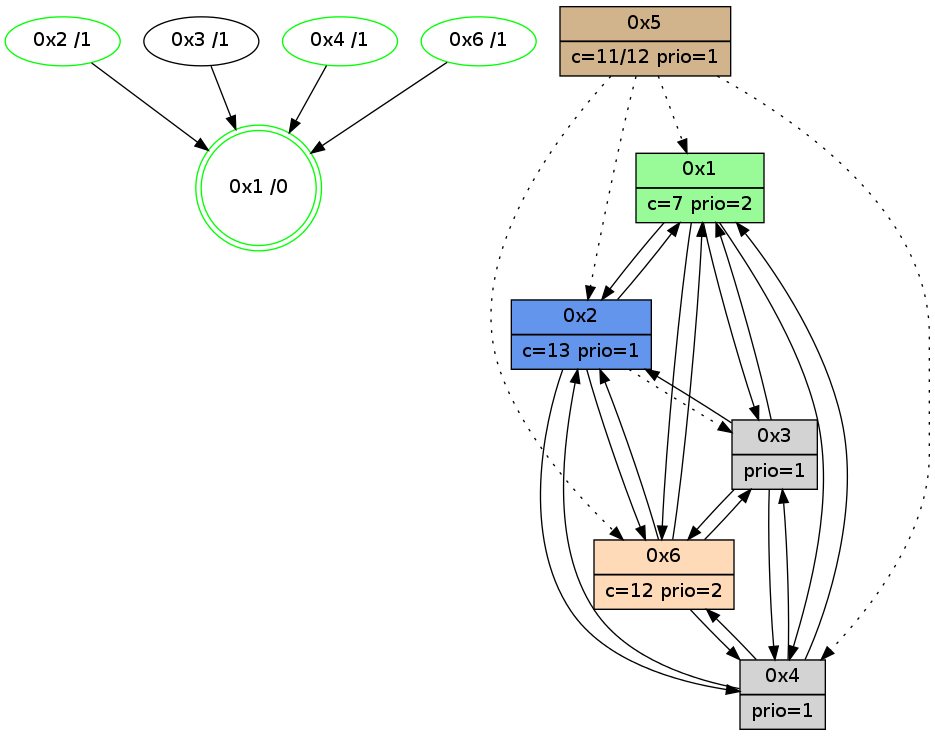

>> << IDX [start] -100 -25 -5 +0 +5 +25 +100 [1050.30851912]
 Previous packets
----------------------------------------------------------------------
1045.387433 beacon01(adaf) #0 coord=01,02,05,03,04,06 cycle=432.0ms assoc
-- color-indic=1 64 19 ee
1045.397394 beacon02(adaf) #0 coord=01,02,05,03,04,06 cycle=432.0ms assoc 64 48 11
1045.407394 beacon05(adaf) #0 coord=01,02,05,03,04,06 cycle=432.0ms assoc 64 ee 3b
1045.417395 beacon03(adaf) #0 coord=01,02,05,03,04,06 cycle=432.0ms assoc 64 72 1f
1045.437395 beacon06(adaf) #0 coord=01,02,05,03,04,06 cycle=432.0ms assoc 64 a0 29
1045.448279 [Hello(1): seq=752 sym=2,6,5,3 sysInfo=hasWarning,coloring-mode-on,ColoringModeRequestCalled stat=2:1,0,0,0/6:9,6,4,4/5:0,0,0,0/3:2,0,2,1]
1045.454103 [STC(3)->1 #0.165 new-neigh,tree-change,inconsistent-stability,to-color d=1]
1045.456040 [STC(2)->1 #0.165 new-neigh,tree-change,inconsistent-stability,stable,to-color d=1]
1045.460090 [Hello(6): seq=765 sym=4,2,1,3 sysInfo=hasWarning stat=4:10,3,7,1/2:3,5,1,0/1:11,13,4,1/3:5,3,9,9]
1045.462931 [STC(6)->1 #0.165 new-neigh,tree-change,inconsistent-stability,stable,to-color d=1]
1045.465202 [Color(6) seq=237 @0:0 color=12 prio=2 c=7,d,e;1,4,6,8,9,b]
----------------------------------------------------------------------
1045.879540 beacon01(adaf) #0 coord=01,02,05,03,04,06 cycle=432.0ms assoc
-- color-indic=1 64 dd 81
1045.889502 beacon02(adaf) #0 coord=01,02,05,03,04,06 cycle=432.0ms assoc 64 8c 7e
1045.899501 beacon05(adaf) #0 coord=01,02,05,03,04,06 cycle=432.0ms assoc 64 2a 54
1045.909502 beacon03(adaf) #0 coord=01,02,05,03,04,06 cycle=432.0ms assoc 64 b6 70
1045.919502 beacon04(adaf) #0 coord=01,02,05,03,04,06 cycle=432.0ms assoc 64 10 5a
1045.929502 beacon06(adaf) #0 coord=01,02,05,03,04,06 cycle=432.0ms assoc 64 64 46
1045.942252 [Hello(4): seq=852 sym=2,1,6,3 sysInfo=hasWarning stat=2:3,5,2,0/1:3,13,10,0/6:9,13,14,5/3:11,10,6,2]
1045.945166 [Color(1) seq=279 @0:0 color=7 prio=2 c=1,4,6,8,9,b,c,d;0,2,3,5,a,e]
1045.947119 [STC(4)->1 #0.165 new-neigh,tree-change,inconsistent-stability,stable,to-color d=1]
1045.949732 [Color(4) seq=133 @0:0 prio=1 c=7,c;1,4,6,8,9,b,d,e]
----------------------------------------------------------------------
1046.371649 beacon01(adaf) #0 coord=01,02,05,03,04,06 cycle=432.0ms assoc
-- color-indic=1 64 91 31
1046.381609 beacon02(adaf) #0 coord=01,02,05,03,04,06 cycle=432.0ms assoc 64 c0 ce
1046.391611 beacon05(adaf) #0 coord=01,02,05,03,04,06 cycle=432.0ms assoc 64 66 e4
1046.401611 beacon03(adaf) #0 coord=01,02,05,03,04,06 cycle=432.0ms assoc 64 fa c0
1046.411613 beacon04(adaf) #0 coord=01,02,05,03,04,06 cycle=432.0ms assoc 64 5c ea
1046.421611 beacon06(adaf) #0 coord=01,02,05,03,04,06 cycle=432.0ms assoc 64 28 f6
1046.433151 [Hello(1): seq=753 sym=2,6,3 sym= sysInfo=hasWarning,coloring-mode-on,ColoringModeRequestCalled stat=]
1046.435680 [Hello(6): seq=766 sym=4,2,1,3 sysInfo=hasWarning stat=4:10,4,8,1/2:3,5,1,0/1:12,14,4,1/3:5,3,9,9]
1046.438672 [Hello(3): seq=851 sym=6,2,1,4 sysInfo=hasWarning stat=6:2,2,9,3/2:2,3,2,0/1:15,13,4,1/4:2,4,1,0]
1046.440571 [Color(6) seq=238 @0:0 color=12 prio=2 c=7,d,e;1,4,6,8,9,b]
1046.442469 [Hello(2): seq=1341 sym=6,1,4 asym=3 sysInfo=hasWarning stat=6:7,3,2,3/1:6,4,13,0/4:5,3,3,1/3:0,0,2,1]
----------------------------------------------------------------------
1046.863756 beacon01(adaf) #0 coord=01,02,05,03,04,06 cycle=432.0ms assoc
-- color-indic=1 64 55 5e
1046.873717 beacon02(adaf) #0 coord=01,02,05,03,04,06 cycle=432.0ms assoc 64 04 a1
1046.883718 beacon05(adaf) #0 coord=01,02,05,03,04,06 cycle=432.0ms assoc 64 a2 8b
1046.893717 beacon03(adaf) #0 coord=01,02,05,03,04,06 cycle=432.0ms assoc 64 3e af
1046.903717 beacon04(adaf) #0 coord=01,02,05,03,04,06 cycle=432.0ms assoc 64 98 85
1046.913718 beacon06(adaf) #0 coord=01,02,05,03,04,06 cycle=432.0ms assoc 64 ec 99
1046.926035 [Color(1) seq=280 @0:0 color=7 prio=2 c=1,4,6,8,9,b,c,d;0,2,3,5,a,e]
1046.929863 [Hello(4): seq=853 sym=2,1,6,3 sysInfo=hasWarning stat=2:4,5,2,0/1:4,13,10,0/6:10,14,14,5/3:12,10,6,2]
1046.931888 [Color(2) seq=240 @0:0 color=13 prio=1 c=7,c,e;1,4,6,8,9,b]
1046.933627 [Color(4) seq=134 @0:0 prio=1 c=7,c;1,4,6,8,9,b,d,e]
----------------------------------------------------------------------
1047.355868 beacon01(adaf) #0 coord=01,02,05,03,04,06 cycle=432.0ms assoc
-- color-indic=1 64 18 59
1047.365828 beacon02(adaf) #0 coord=01,02,05,03,04,06 cycle=432.0ms assoc 64 49 a6
1047.375829 beacon05(adaf) #0 coord=01,02,05,03,04,06 cycle=432.0ms assoc 64 ef 8c
1047.385830 beacon03(adaf) #0 coord=01,02,05,03,04,06 cycle=432.0ms assoc 64 73 a8
1047.395831 beacon04(adaf) #0 coord=01,02,05,03,04,06 cycle=432.0ms assoc 64 d5 82
1047.405829 beacon06(adaf) #0 coord=01,02,05,03,04,06 cycle=432.0ms assoc 64 a1 9e
1047.417528 [Hello(3): seq=852 sym=6,2,1,4 sysInfo=hasWarning stat=6:2,3,9,3/2:3,4,2,0/1:15,14,4,1/4:3,5,1,0]
1047.420014 [Hello(1): seq=754 sym=2,4,6,3 sysInfo=hasWarning,coloring-mode-on,ColoringModeRequestCalled stat=2:3,1,1,0/4:0,1,0,0/6:11,8,5,4/3:3,0,3,1]
1047.422998 PARSE ERROR************************
Traceback (most recent call last):
File "PacketAnalysis.py", line 167, in showOperaPacket
structPacket = OperaPacketParse.parsePacket(rawPacket)
File "../../pkg-python/HipSens/Core/OperaPacketParse.py", line 461, in parsePacket
return parseHelloMessage(data)
File "../../pkg-python/HipSens/Core/OperaPacketParse.py", line 109, in parseHelloMessage
sysInfo,stability,colorInfo = struct.unpack("!HBB", linkList[0:4])
error: unpack requires a string argument of length 4
48 22 02 00 05 3e 00 02 02 06 06 00 01 00 04 00 01 02 03 00 53 04 00 02 00 00 4c 08 32 37 0d 46 13 45 12 00 53 94
1047.425594 [Hello(6): seq=767 sym=4,2,1,3 sysInfo=hasWarning stat=4:11,5,8,1/2:4,6,1,0/1:13,15,4,1/3:5,3,9,9]
1047.428719 [Color(6) seq=239 @0:0 color=12 prio=2 c=7,d,e;1,4,6,8,9,b]
1047.435579 [STC(1) #0.166 new-neigh,tree-change,inconsistent-stability,stable,to-color d=0]
----------------------------------------------------------------------
1047.847976 beacon01(adaf) #0 coord=01,02,05,03,04,06 cycle=432.0ms assoc
-- color-indic=1 64 dc 36
1047.857937 beacon02(adaf) #0 coord=01,02,05,03,04,06 cycle=432.0ms assoc 64 8d c9
1047.867937 beacon05(adaf) #0 coord=01,02,05,03,04,06 cycle=432.0ms assoc 64 2b e3
1047.877938 beacon03(adaf) #0 coord=01,02,05,03,04,06 cycle=432.0ms assoc 64 b7 c7
1047.887938 beacon04(adaf) #0 coord=01,02,05,03,04,06 cycle=432.0ms assoc 64 11 ed
1047.897938 beacon06(adaf) #0 coord=01,02,05,03,04,06 cycle=432.0ms assoc 64 65 f1
1047.909484 [STC(3)->1 #0.166 new-neigh,tree-change,inconsistent-stability,to-color d=1]
1047.911571 [Hello(4): seq=854 sym=2,1,6,3 sysInfo=hasWarning stat=2:5,5,2,0/1:5,13,11,0/6:11,15,14,5/3:13,10,6,2]
1047.914161 [Color(2) seq=241 @0:0 color=13 prio=1 c=7,c,e;1,4,6,8,9,b]
1047.915865 [Color(1) seq=281 @0:0 color=7 prio=2 c=1,4,6,8,9,b,c,d;0,2,3,5,a,e]
1047.918584 [STC(6)->1 #0.166 new-neigh,tree-change,inconsistent-stability,stable,to-color d=1]
1047.920083 [STC(4)->1 #0.166 new-neigh,tree-change,inconsistent-stability,stable,to-color d=1]
1047.922366 [Color(4) seq=135 @0:0 prio=1 c=7,c;1,4,6,8,9,b,d,e]
----------------------------------------------------------------------
1048.340084 beacon01(adaf) #0 coord=01,02,05,03,04,06 cycle=432.0ms assoc
-- color-indic=1 64 90 86
1048.350045 beacon02(adaf) #0 coord=01,02,05,03,04,06 cycle=432.0ms assoc 64 c1 79
1048.360046 beacon05(adaf) #0 coord=01,02,05,03,04,06 cycle=432.0ms assoc 64 67 53
1048.370045 beacon03(adaf) #0 coord=01,02,05,03,04,06 cycle=432.0ms assoc 64 fb 77
1048.380046 beacon04(adaf) #0 coord=01,02,05,03,04,06 cycle=432.0ms assoc 64 5d 5d
1048.390045 beacon06(adaf) #0 coord=01,02,05,03,04,06 cycle=432.0ms assoc 64 29 41
1048.401759 [Hello(3): seq=853 sym=6,2,1,4 sysInfo=hasWarning stat=6:3,4,10,3/2:4,5,2,0/1:0,15,5,1/4:4,6,2,0]
1048.404428 [Hello(6): seq=768 sym=4,2,1,3 sysInfo=hasWarning stat=4:11,6,9,1/2:4,6,1,0/1:13,15,5,1/3:6,3,9,9]
1048.407207 [Hello(2): seq=1343 sym=6,1,4 asym=3 sysInfo=hasWarning stat=6:8,4,3,3/1:6,5,14,0/4:5,5,4,1/3:0,0,3,1]
1048.409293 [Color(6) seq=240 @0:0 color=12 prio=2 c=7,d,e;1,4,6,8,9,b]
1048.410793 [Hello(1): seq=755 sym=2,4,6,3 sysInfo=hasWarning,coloring-mode-on,ColoringModeRequestCalled stat=2:3,1,1,0/4:0,2,1,0/6:11,8,6,4/3:3,0,4,1]
----------------------------------------------------------------------
1048.832191 beacon01(adaf) #0 coord=01,02,05,03,04,06 cycle=432.0ms assoc
-- color-indic=1 64 54 e9
1048.842154 beacon02(adaf) #0 coord=01,02,05,03,04,06 cycle=432.0ms assoc 64 05 16
1048.852153 beacon05(adaf) #0 coord=01,02,05,03,04,06 cycle=432.0ms assoc 64 a3 3c
1048.862153 beacon03(adaf) #0 coord=01,02,05,03,04,06 cycle=432.0ms assoc 64 3f 18
1048.872153 beacon04(adaf) #0 coord=01,02,05,03,04,06 cycle=432.0ms assoc 64 99 32
1048.882154 beacon06(adaf) #0 coord=01,02,05,03,04,06 cycle=432.0ms assoc 64 ed 2e
1048.894644 [Hello(4): seq=855 sym=2,1,6,3 sysInfo=hasWarning stat=2:6,5,2,0/1:6,13,11,0/6:12,0,14,5/3:14,10,7,2]
1048.897778 [Color(4) seq=136 @0:0 prio=1 c=7,c;1,4,6,8,9,b,d,e]
1048.900325 [Color(2) seq=242 @0:0 color=13 prio=1 c=7,c,e;1,4,6,8,9,b]
1048.901787 [Color(1) seq=282 @0:0 color=7 prio=2 c=1,4,6,8,9,b,c,d;0,2,3,5,a,e]
----------------------------------------------------------------------
1049.324302 beacon01(adaf) #0 coord=01,02,05,03,04,06 cycle=432.0ms assoc
-- color-indic=1 64 2c 44
1049.334264 beacon02(adaf) #0 coord=01,02,05,03,04,06 cycle=432.0ms assoc 64 7d bb
1049.344263 beacon05(adaf) #0 coord=01,02,05,03,04,06 cycle=432.0ms assoc 64 db 91
1049.354263 beacon03(adaf) #0 coord=01,02,05,03,04,06 cycle=432.0ms assoc 64 47 b5
1049.364263 beacon04(adaf) #0 coord=01,02,05,03,04,06 cycle=432.0ms assoc 64 e1 9f
1049.374264 beacon06(adaf) #0 coord=01,02,05,03,04,06 cycle=432.0ms assoc 64 95 83
1049.388620 [Hello(6): seq=769 sym=4,2,1,3 sysInfo=hasWarning stat=4:12,7,9,1/2:4,7,1,0/1:14,0,5,1/3:7,3,9,9]
1049.391751 [Color(6) seq=241 @0:0 color=12 prio=2 c=7,d,e;1,4,6,8,9,b]
1049.396283 [Hello(1): seq=756 sym=2,4,6,3 sysInfo=hasWarning,coloring-mode-on,ColoringModeRequestCalled stat=2:3,1,1,0/4:0,2,1,0/6:11,8,6,4/3:3,0,4,1]
----------------------------------------------------------------------
1049.816412 beacon01(adaf) #0 coord=01,02,05,03,04,06 cycle=432.0ms assoc
-- color-indic=1 64 e8 2b
1049.826372 beacon02(adaf) #0 coord=01,02,05,03,04,06 cycle=432.0ms assoc 64 b9 d4
1049.836372 beacon05(adaf) #0 coord=01,02,05,03,04,06 cycle=432.0ms assoc 64 1f fe
1049.846373 beacon03(adaf) #0 coord=01,02,05,03,04,06 cycle=432.0ms assoc 64 83 da
1049.856373 beacon04(adaf) #0 coord=01,02,05,03,04,06 cycle=432.0ms assoc 64 25 f0
1049.866374 beacon06(adaf) #0 coord=01,02,05,03,04,06 cycle=432.0ms assoc 64 51 ec
1049.878877 [Hello(4): seq=856 sym=2,1,6,3 sysInfo=hasWarning stat=2:6,6,2,0/1:7,14,11,0/6:13,1,14,5/3:15,10,7,2]
1049.881810 [STC(1) #0.167 new-neigh,tree-change,inconsistent-stability,stable,to-color d=0]
1049.883745 [Color(4) seq=137 @0:0 prio=1 c=7,c;1,4,6,8,9,b,d,e]
1049.888199 [Color(2) seq=243 @0:0 color=13 prio=1 c=7,c,e;1,4,6,8,9,b]
1049.895682 [Color(1) seq=283 @0:0 color=7 prio=2 c=1,4,6,8,9,b,c,d;0,2,3,5,a,e]